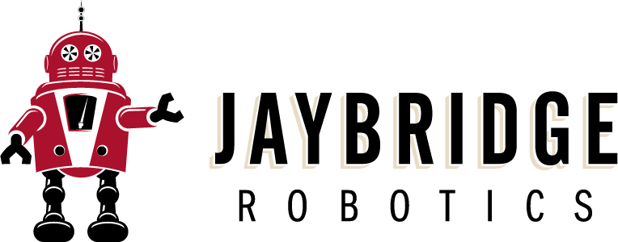
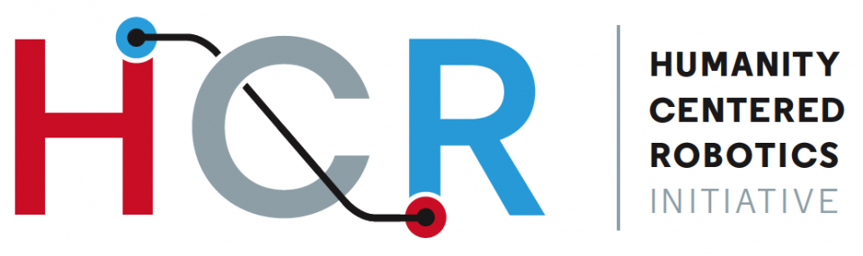
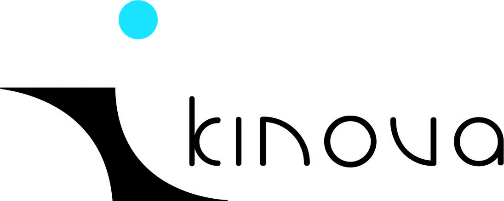
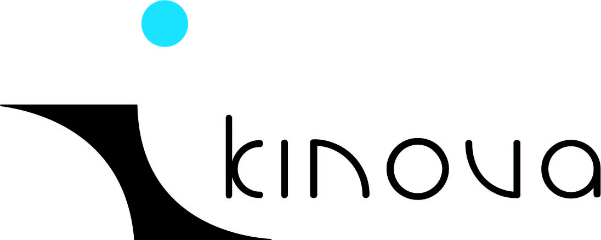

|
Northeast Robotics Colloquium
October 11, 2014Alumnae Hall, Brown University 194 Meeting St., Providence, RI 02912 |

|
Update: We have posted the programs, which include poster abstracts and exhibits!
Update: Due to the ICRA and HRI deadline, we have extended the poster and demo submission deadline to Saturday, October 4rd! We encourage posters and demos about your HRI and ICRA submissions!
Overview
NERC is back in 2014, hosted by Brown University! Robotics is poised for rapid and dramatic growth in the coming decade as the combination of technical advances, the growing availability of talented and highly-trained roboticists, and falling hardware render many real-world applications, involving ever more complex systems, feasible.
Robotics is also a field whose progress depends directly on sustained technology and skill transfer between academia and industry, and between different industry sectors. The northeast is dense with world-leading universities, cutting edge robotics research laboratories, and robotics companies — yet there are very few events where roboticists from all of these institutions can mix freely and forge productive local collaborations.
The Northeast Robotics Colloquium brings together all of these many varieties of robotics practitioners in the northeastern United States, in an event that is simultaneously a research meeting, a networking event, a job-fair, and a showcase for established and up-and-coming robot companies. Ultimately, we hope to promote the kind of healthy and well-connected robotics community that will be essential in fueling the field's rapid growth in the coming decade.
This year, NERC is co-located with Waterfire, Providence's well-known festival of fire and water. After the colloquium, enjoy a full-basin lighting of braziers along the rivers in Providence, along with music and other festivities.
Call for Participation
We invite all roboticists to attend the third Northeast Robotics Colloquium at Brown University in Providence, RI on October 11, 2014.
The colloquium will feature invited research talks by leading local academics, robotics industry booths and demos, career opportunities, and the opportunity to meet and mix with other area roboticists. Academic and industrial research labs will have the opportunity to present their work at a poster session.
Call for Posters and Demos
Apart from the invited talks, the colloquium will feature an extensive poster/demo session intended to foster discussion on the recent developments in robotics from both academia and industry. This is a great opportunity for you to publicize your ongoing work, as well as get feedback.
Guidelines for poster abstract submissions: Submit a proposal for demos or posters as a 1-paragraph abstract. Make sure that the author list, affiliations, and contact information are clear in the submission. Please email them to the organizers at nerc-2014@lists.cs.brown.edu, with subject "Poster" for poster submissions and "Demo" for demo submissions. We will accept posters and demos on a rolling basis.
Invited Speakers
- Bertram Malle, Brown University. The next great challenge: Moral competence in robots. (co-authored with Matthias Scheutz.)
- Holly Yanco, UMass Lowell
- Joe Jones, Harvest Automation
- Nicholas Roy, MIT, Google
Important Dates
| Poster/Demo Submission | |
| Poster/Demo Acceptance Notification | October 6, 2014 (Rolling notification; submit earlier to find out earlier.) |
| Registration Deadline | October 4, 2014 |
| Colloquium | Saturday, October 11, 2014 |
Registration
Registration is open! Register for NERC here. The registration deadline is September 30, 2014. Registration is $50 for general audience, $10 for undergraduates/high school students, and additional meal tickets for family members are available for $10. Slots for companies wishing to exhibit or demo at NERC are available for $250. Academic demonstrations are included in the regular registration fee. Companies and organizations wishing to sponsor at higher levels should contact the organizers.
Program
| 07:00am | Doors open for exhibitors |
| 09:00am | Registration opens |
| 09:45am | Welcoming Remarks |
| 10:00am | Holly Yanco |
| 11:00am | Nicholas Roy |
| 12:00pm | Sponsor Spotlight: Jaybridge Robotics |
| 12:15pm | Lunch |
| 01:30pm | Joe Jones. How to Move 7 Million Plants: A Case Study of Robots, Enterprise, and Technology |
| 02:30pm | Poster Session and Laboratory Tours |
| 04:30pm | Bertram Malle. The next great challenge: Moral competence in robots |
Getting to Brown
NERC is located at Alumnae Hall. This venue is fifteen minutes walk from the Providence Amtrak station, which has daily MBTA commuter rail service from Boston, as well as and Amtrak service up and down the northeast corridor. Coming from Boston, the T takes about 60 minutes and costs $10, while Amtrak takes 45 minutes and costs approximately $15. There is also non-stop bus service from New York City.
Parking
Parking is available on the street around the event at meters and in residential neighborhoods. NERC is a 15 minute walk from the Providence Amtrack/MBTA station, and we encourage the use of public transportation due to limited parking.
Families
We recognize that NERC is held on a Saturday, and that this makes it difficult for some people to attend. To address this, we're including a low-cost family registration option (and kids under 12 are free!), so your family can attend the conference, see the robots, and share the food at the event. Providence is a great city for families, and has a wonderful Children's Museum close to Brown University. There are also many great beaches and parks; one of our favorites is Lincoln Woods. Finally, we are holding NERC on the same day as the famous Waterfire festival. After NERC finishes, about 10 minutes away in downtown Providence, more than eighty braziers will be lit in the rivers. There will be live music, food, and other activities.
If you have other ideas on things we could do to make it more family friendly, let us know! The Wall Street Journal just published an article about Providence: The Perfect Long Weekend in Providence
Accomodations
We expect many people will choose to attend NERC as a day trip, but if people wish to stay overnight (especially to attend Waterfire), we recommend the following hotels:
- Hampton Inn & Suites Providence Downtown. Nice, low-cost, and close.
- Hotel Providence. Local place close to Waterfire.
- The Dean Hotel. Cool local place.
- Providence Marriot Downtown. Kid-friendly -- it has an indoor heated pool, but it a little farther away - a 20 minute walk to the NERC venue and to Waterfire.
Organizing Committee
Stefanie Tellex, Brown University
Mehmet R. Dogar, MIT
Suzanne Alden, Brown University
Steering Committee
NERC's Steering commitee meets annually to plan the future of this
event.
Rodney Brooks, Rethink Robotics, MIT (emeritus)
George Konidaris, Duke University
Daniela Rus, MIT
Stefanie Tellex, Brown University
Matthew Walter, Rutgers University
Sponsors
Gold Sponsors
 
Regular Sponsors
 
